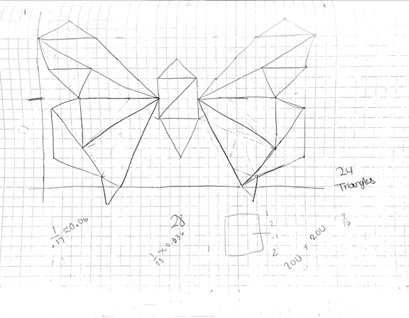

Red
Green
Blue
Size (Circles) Segment Count:
angonsal@ucsc.edu
This assignment was pretty fun! For my drawing, I made a geometric butterfly. See the picture below for reference. To make my webpage awesome, the first thing I did was change the cursors for different elements. When the cursor is on the canvas, the cursor is a pencil. When on the RGB sliders, the cursor is a paint palatte. When on the "cool drawing" button the cursor turns into a pink magic wand. All of these cursors are png files from google. I have linked them below. I also added some sound effects to a couple buttons. For the clear button I added the Roblox "oof" sound effect. For the cool drawing button I added the sound effect from Metal Gear. For the "Connect the Dots!" button I added a meme sound effect.
The main thing I did to make my page awesome was create a connect the dot feature. As a kid, I used to love connect the dots so I tried to encorperate it in this project. I created 8 different drawings using points. When the "Connect the Dots!" button is clicked, the dots appear on the screen and the user can draw to connect them. Each time the button is pressed, a new drawing appears. Drawings include basic shapes like a square, triangle, but also include a house, a heart, and a peace sign.
